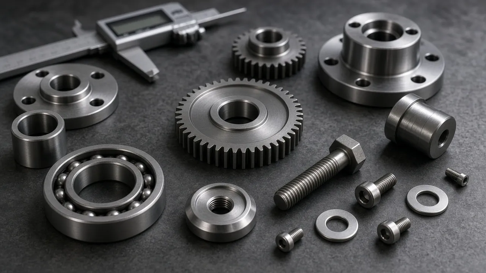
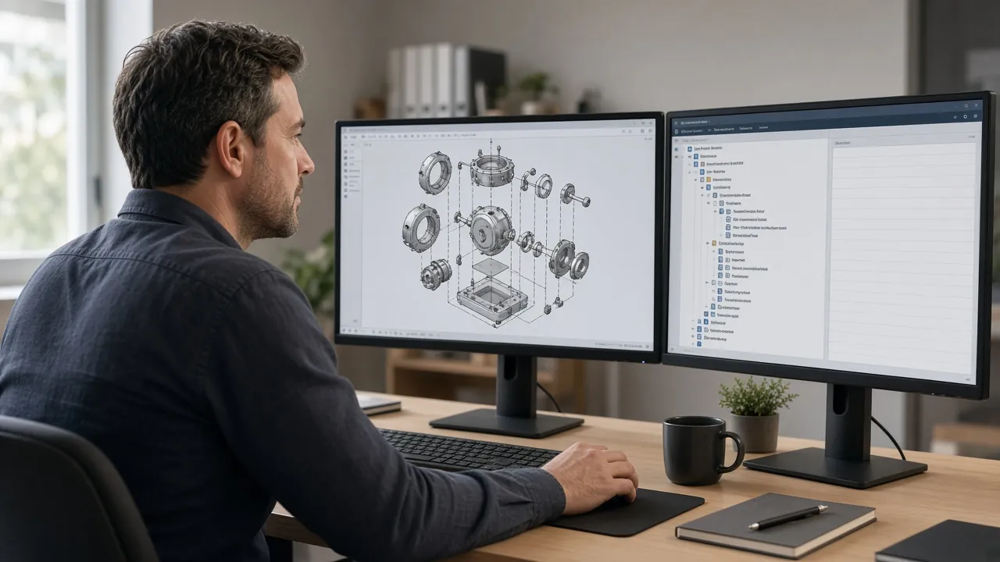
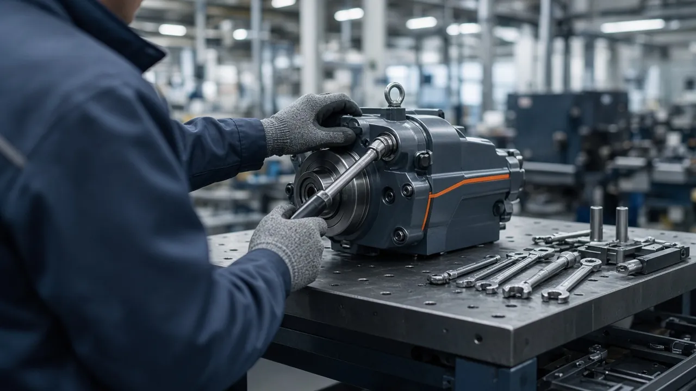
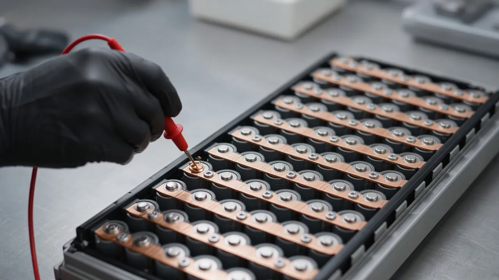
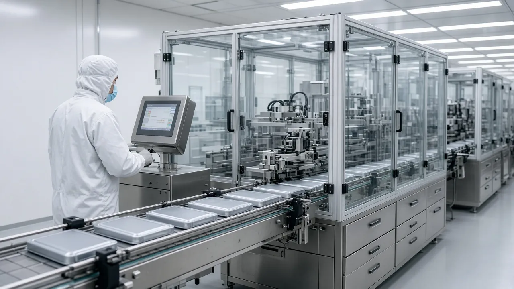
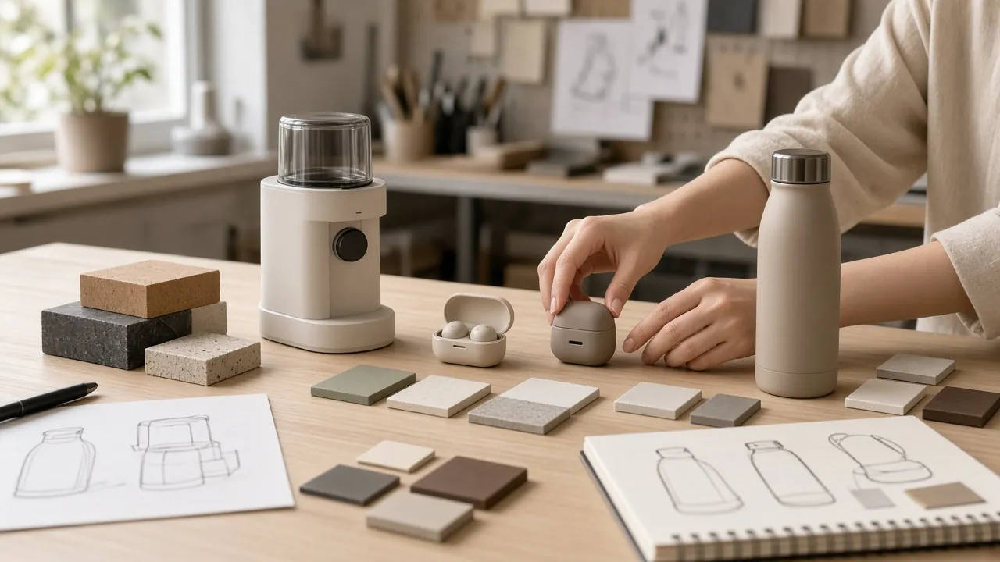
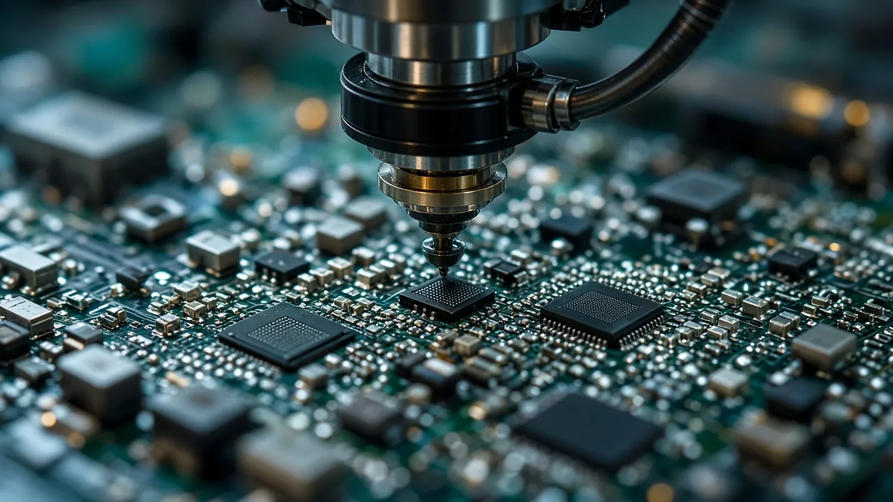

PLM for Component Manufacturers
PLM foundations for component design, reuse and supplier collaboration.
業界別PLM
イノベーションとデジタル変革を加速する、業界別PLMソリューションです。

PLM foundations for component design, reuse and supplier collaboration.

Move from product data management to connected PLM practices.
Cloud PLM workflows for regulated and complex aerospace and defense programs.

Advanced manufacturing engineering and machinery-focused lifecycle management.
Cloud PLM for automotive development, collaboration and faster launch cycles.

Support battery product development with connected cloud PLM.

PLM practices for battery machine builders and production ecosystems.

Manage consumer product complexity from design through launch.

Support electronics lifecycle and cross-domain product data.
PLM workflows for marine product development.
Understand the business value of cloud-based SaaS PLM with Teamcenter X.